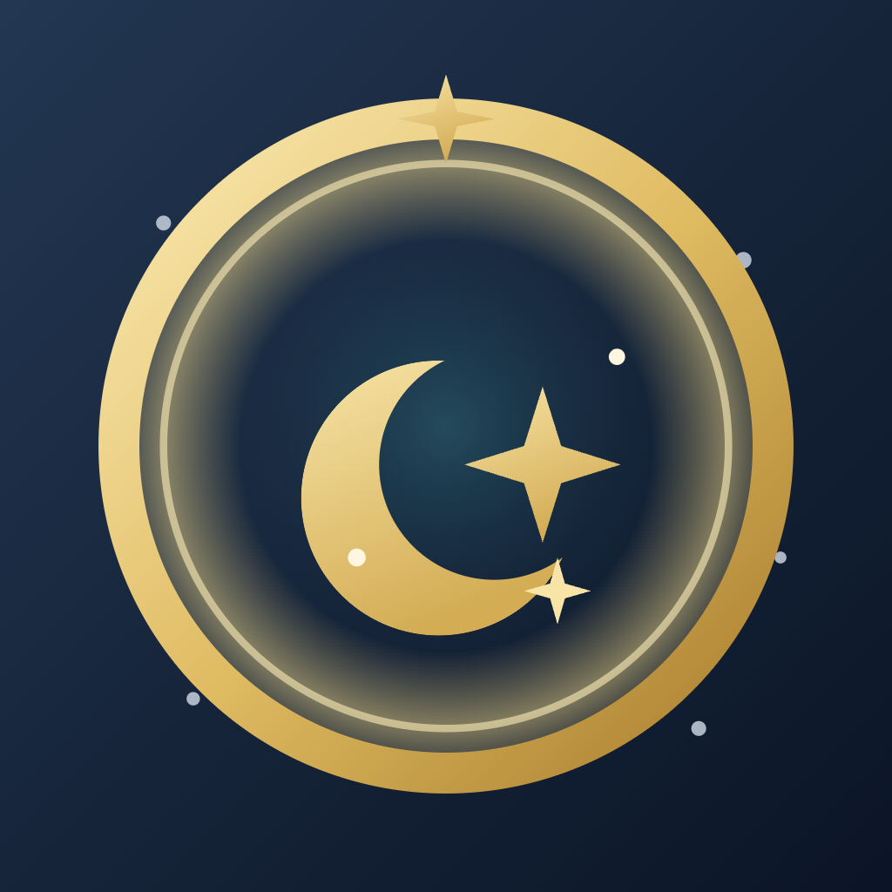

Numérologie & horoscope réunis. À partir de votre date, votre heure et votre lieu de naissance, découvrez votre thème, votre ascendant et une guidance qui vous ressemble.
Comprendre vos nombres, lire votre ciel et avancer jour après jour — sans compte, sans jargon.
Chemin de vie, expression, âme, personnalité, défis et cycles, grille d'inclusion et dettes karmiques. Jusqu'à la part d'ombre de chaque nombre, pour un portrait honnête.
Votre signe solaire et votre ascendant, calculé astronomiquement depuis l'heure et le lieu de naissance. Horoscope du jour, de la semaine et jours favorables.
Une lecture qui relie tout : Soleil × Ascendant × chemin de vie, et la combinaison de vos éléments dominants — feu, terre, air, eau.
Enregistrez vos proches et comparez vos thèmes sur 8 dimensions notées — amour, passion, amitié, communication, travail, valeurs, quotidien, stabilité — avec forces et points de vigilance.
Un questionnaire de vie, puis une guidance personnalisée domaine par domaine selon votre année personnelle. Un journal pour noter la résonance de vos journées.
Un rappel quotidien à l'heure de votre choix pour ne rien manquer, et le partage de votre journée en un geste, quand vous le souhaitez.
Aucun achat, aucun abonnement, aucune fonction verrouillée.
Numerocoon est un cadeau de la galaxie Bengacoon — à découvrir en toute liberté.
L'application est entièrement traduite, jusqu'aux textes de guidance.
Numerocoon évolue régulièrement — voici les nouveautés récentes. L'historique complet est sur GitHub.
La fiche d'un animal est bien plus complète : forces, besoins, place dans la famille, mot doux et énergie du jour.
Nouvelle icône (médaillon d'or, croissant de lune) et un guide d'utilisation complet intégré, accessible hors ligne.
Une photo sur chaque profil, la fiche complète d'une personne (signe, ascendant, nombres) et la fiche numérologique des animaux.
Gérez plusieurs profils (conjoint, enfants, famille…) avec ajout/édition/suppression et liste de compatibilité, plus des profils pour vos animaux.
Calendrier numérologique du mois, « ciel du moment » (Lune, Mercure rétrograde, nombre universel) et numérologie de votre animal de compagnie.
Un widget Android pour poser votre nombre du jour directement sur l'écran d'accueil de votre téléphone.
Carte du jour à partager, roue du thème (Soleil + Ascendant), prévisions sur 12 mois, tendances du journal, sauvegarde/restauration, taille du texte réglable et tour de bienvenue.
La version APK direct télécharge et installe désormais ses mises à jour depuis l'application, sans passer par le navigateur.
Biorythmes du jour (physique, émotionnel, intellectuel), rubrique « Découvrir » pour tout comprendre, et export du thème complet en PDF.
Alignement des versions iOS et Android et préparation de la publication sur les deux plateformes.
Roue crantée d'accès aux Réglages et signature « par Bengacoon » sur l'accueil.
Localisation complète, jusqu'aux phrases assemblées, dans les 9 langues.
Aucun compte à créer, aucune donnée personnelle collectée. Votre profil et vos proches restent sur votre appareil. La seule connexion sert à vérifier les mises à jour — sans rien envoyer vous concernant.